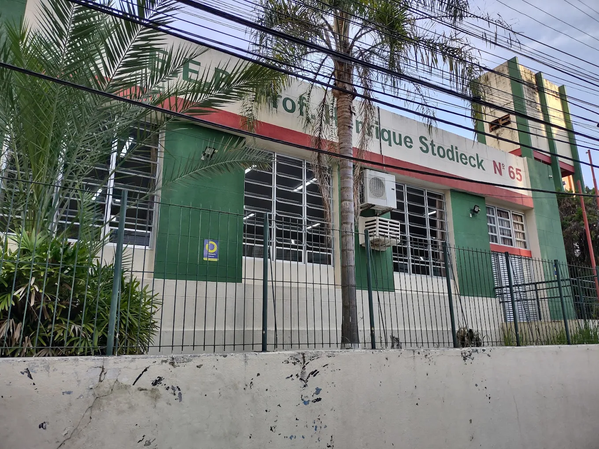
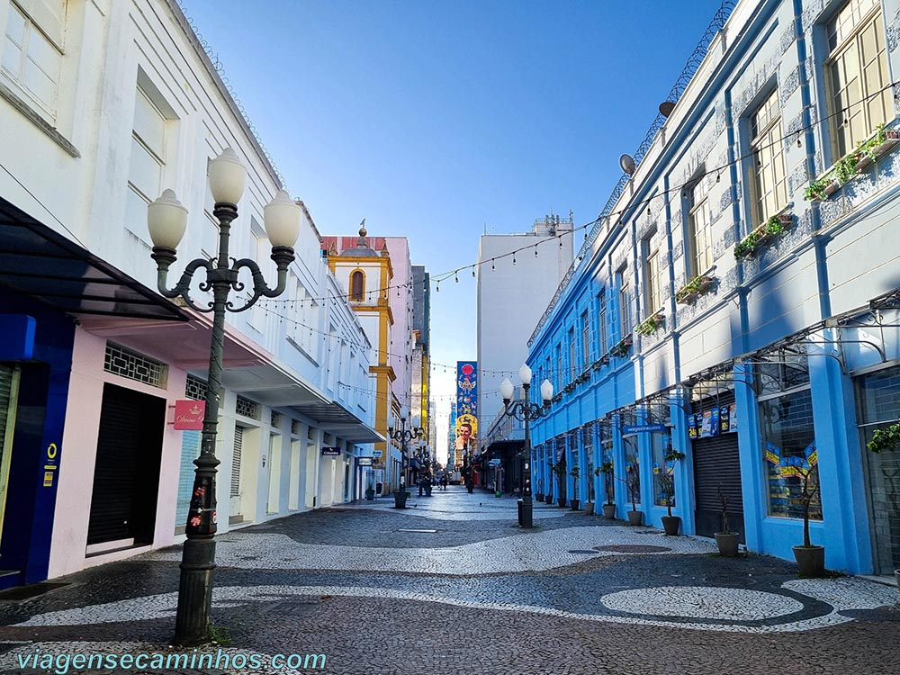
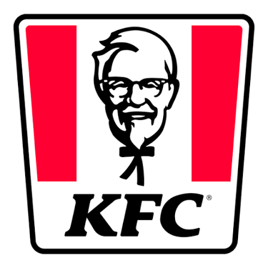
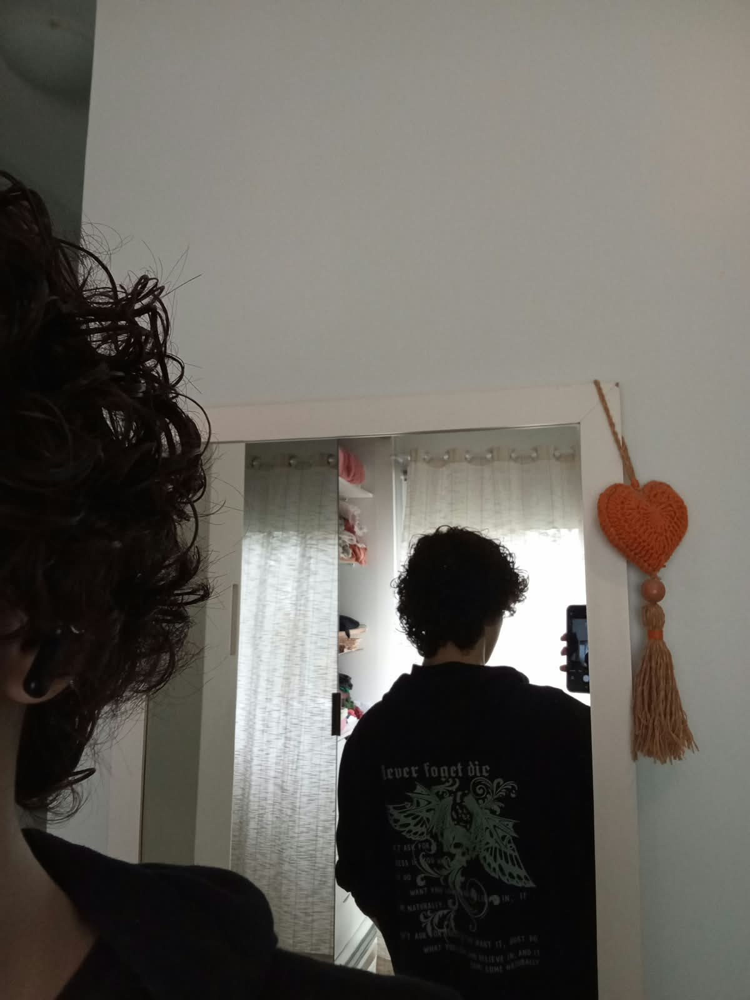
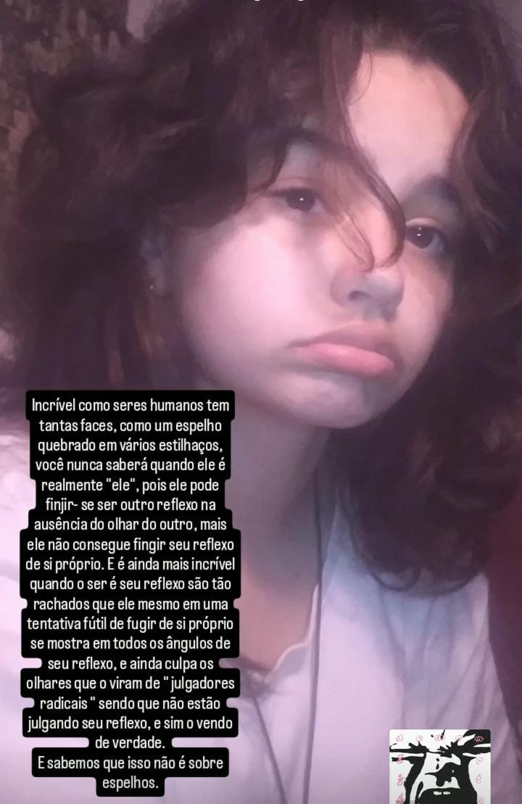
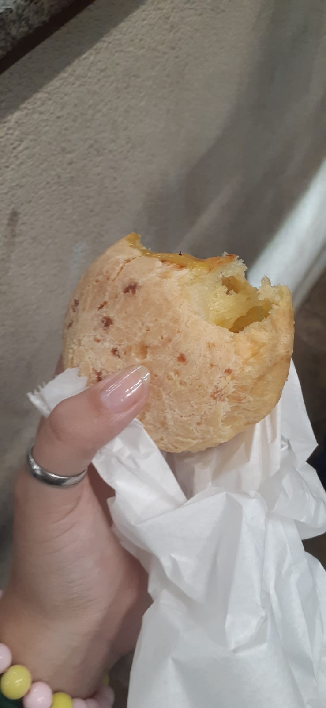
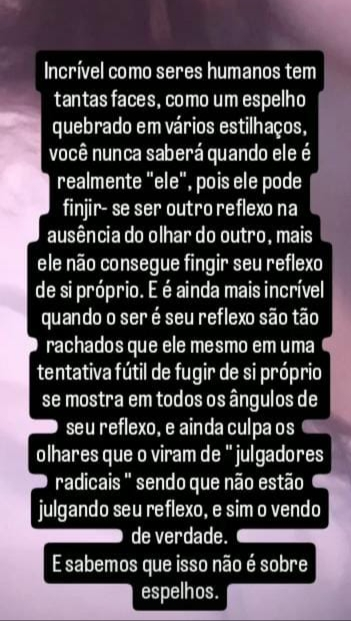
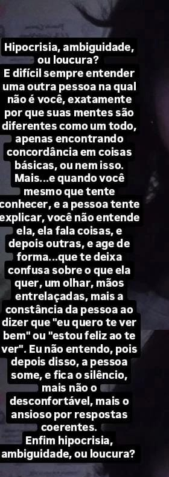

Escola - Lugar onde você me conheceu e onde tudo começou.
Aqui estão alguns locais em que nós estivemos juntos

Escola - Lugar onde você me conheceu e onde tudo começou.
Ticen - Onde eu te encontrei pela primeira vez.
Beiramar Shopping - Lugar onde minha privacidade foi invadida pelos seus amiguinhos e onde eu me apaixonei por você pela primeira vez.

Centro - Onde a gente caminhou, encontrei um cara de cabelo rosa, comprei um besouro pra você, e você ficou puta comigo por não saber andar direito. :/
Aqui estão alguns filmes que eu sei que você gosta ou que pelo menos ja assistiu.

Blade: O Caçador e Vampiros - Segundo você, o seu filme de conforto.
Laranja Mecânica - Você não falou muito sobre ele, mas pelo que você fala do livro eu imagino que goste.
Van Helsing: O Caçador De Monstros - Ainda to te devendo ver esse filme...
Supernatural - Não é exatamente um filme, mas tu disse que ja assistiu muitas vezes. E ele me lembra você.
Crepúsculo - Não sei por que mulher gosta tanto desse filme. Quero ver ele com você algum dia.
O Labirinto do Fauno - Você falou que gostava desse filme no primeiro dia que conversamos.
Hilda Furacão - Acho que você tem um pouco de fetiche em padre...
O Ataque do Tubarão de 3/5/6 Cabeças - Realmente não sei por que você gosta tanto desses filmes.
Mais uma porrada de filmes toscos de tubarão que eu não me importaria de passar a semana inteira vendo com você.
Aqui estão algumas bandas que eu lembro que você gosta
The Smiths - Sua banda favorita.
MF DOOM - Eu vi ela em algum sotries seu se não me engano.
Belchior - Também vi em algum stories seu.
Tyler, The Creator - você comentou que gosta dele na primeira vez que a gente conversou.
Trash Poll - também disse que gosta dele no dia em que pediu o meu instagram.
Só tem um Livro aqui por que é o unico que você comentou sobre, mesmo tendo falado que gosta de ler.
Labirinto Do Fauno - acho que foi a primeira coisa que me deu uma "boa impressão" sobre você.
Aqui estão algumas comidas que você disse que gosta, ou que eu imagino que goste... não daria para listar todas, eu passaria uma eternidade aqui.
Sonho de Chocolate - Seu pai é padeiro? porque você é um sonho... que vergonha de estar escrevendo isso.

Frango - Come isso todo dia, Não sei como não enjoa.
Caldo de Batata - Não sei, lembro que você comentou que estava comendo um dia desses.
Guacamole - Você fez depois do seu pai depositar dinheiro, e você ir comprar os ingredientes com a sua mãe.
Bala Azeda - A primeira coisa que eu te dei.
Limão com Pimenta e Sal - Coisa de alcoólatra...
Bolo - Acho que aquele bolo que você me deu foi um dos melhores bolos que eu ja comi. muito obrigado, meu amor!
Queijo - Mineirinha...

Eu - ...
Aqui estão alguns desejos seus que eu quero te ver realizar.
Ler "laranja Mecanica" - Deve ter falado disso umas 20 vezes já. compra isso na internet logo.
Ir pra Itália - Quero te levar pra lá algum dia para a gente ver o cadaver da sua bisavó...
Ter uma Máquina de Costura - Mesmo que você tenha dito que é complicado demais de mexer.
Comer Sushi - Quero te levar pra comer algum dia, se sua mãe não estiver querendo me espancar.
Aqui estão alguns dos seus hobbies que eu quero fazer com você.
Costurar - Adoro as roupas que você faz. Ainda me lembro do dia que você disse que ia me ensinar a costurar e eu te ensinar a programar...
Desenhar - queria saber desenhar tão bem quanto você. Gosto muito de ver seus desenhos, principalmente os sobre nós.

Escrever Poemas - Acho muito legal que você goste desse tipo de coisa. acho seus poemas muito bonitos, e espero um dia poder ser a inspiração de um deles...
Assistir Novela - Idosa.
Assistir Tv - Ta ficando repetitivo, mas eu adoraria assistir com você...

Comer - Não preciso nem falar nada, imagino.
Aqui estão alguns de seus lindos poemas

Hipocrisia, ambiguidade, ou loucura? E difícil sempre entender uma outra pessoa na qual não é você, exatamente por que suas mentes são diferentes como um todo, apenas encontrando concordância em coisas básicas, ou nem isso. Mais...e quando você mesmo que tente conhecer, e a pessoa tente explicar, você não entende ela, ela fala coisas, e depois outras, e age de forma...que te deixa confusa sobre o que ela quer, um olhar, mãos entrelaçadas, mais a constância da pessoa ao dizer que "eu quero te ver bem" ou "estou feliz ao te ver". Eu não entendo, pois depois disso, a pessoa some, e fica o silêncio, mais não o desconfortável, mais o ansioso por respostas coerentes. Enfim hipocrisia, ambiguidade, ou loucura?

Incrível como seres humanos tem tantas faces, como um espelho quebrado em vários estilhaços, você nunca saberá quando ele é realmente "ele", pois ele pode finjir- se ser outro reflexo na ausência do olhar do outro, mais ele não consegue fingir seu reflexo de si próprio. E é ainda mais incrível quando o ser é seu reflexo são tão rachados que ele mesmo em uma tentativa fútil de fugir de si próprio se mostra em todos os ângulos de seu reflexo, e ainda culpa os olhares que o viram de "julgadores radicais " sendo que não estão julgando seu reflexo, e sim o vendo de verdade. E sabemos que isso não é sobre espelhos.
Primeiro, eu gostaria de falar que podem ter faltado muitas coisas aí, mas eu queria fazer isso apenas com coisas que vieram da minha mente, não queria pegar nada nas nossas conversas. Além de que demoraria um século pra terminar se eu fosse escrever tudo, como os filmes de tubarao, as comidas, os filmes de terror, etc... Então, se estiver faltando alguma coisa importante, me desculpa. Dito isso, a carta: